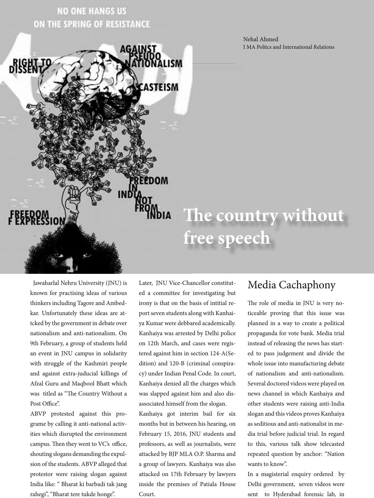

Jawaharlal Nehru University (JNU) is
known for practising ideas of various
thinkers including Tagore and Ambed-
kar. Unfortunately these ideas are at-
tcked by the government in debate over
nationalism and anti-nationalism. On
9th February, a group of students held
an event in JNU campus in solidarity
with struggle of the Kashmiri people
and against extra-juducial killings of
Afzal Guru and Maqbool Bhatt which
was titled as “e Country Without a
Post Oce”.
ABVP protested against this pro-
grame by calling it anti-national activ-
ities which disrupted the environment
campus. en they went to VC’s oce,
shouting slogans demanding the expul-
sion of the students. ABVP alleged that
protestor were raising slogan against
India like: “ Bharat ki barbadi tak jang
rahegi”, “Bharat tere tukde honge”.
Later, JNU Vice-Chancellor constitut-
ed a committee for investigating but
irony is that on the basis of intitial re-
port seven students along with Kanhai-
ya Kumar were debbared academically.
Kanhaiya was arrested by Delhi police
on 12th March, and cases were regis-
tered against him in section 124-A(Se-
dition) and 120-B (criminal conspira-
cy) under Indian Penal Code. In court,
Kanhaiya denied all the charges which
was slapped against him and also dis-
associated himself from the slogan.
Kanhaiya got interim bail for six
months but in between his hearing, on
February 15, 2016, JNU students and
professors, as well as journalists, were
attacked by BJP MLA O.P. Sharma and
a group of lawyers. Kanhaiya was also
attacked on 17th February by lawyers
inside the premises of Patiala House
Court.
e role of media in JNU is very no-
ticeable proving that this issue was
planned in a way to create a political
propaganda for vote bank. Media trial
instead of releasing the news has start-
ed to pass judgement and divide the
whole issue into manufacturing debate
of nationalism and anti-nationalism.
Several doctored videos were played on
news channel in which Kanhaiya and
other students were raising anti-India
slogan and this videos proves Kanhaiya
as seditious and anti-nationalist in me-
dia trial before judicial trial. In regard
to this, various talk show telecasted
repeated question by anchor: “Nation
wants to know”.
In a magisterial enquiry ordered by
Delhi government, seven videos were
sent to Hyderabad forensic lab, in
Nehal Ahmed
I MA Politcs and International Relations
Media Cachaphony
e country without
free speech